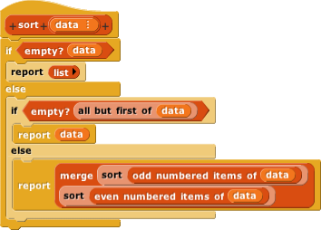
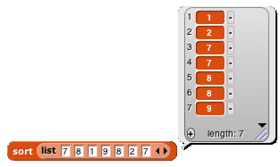

Now that we've solved the split-in-half problem, the remaining challenge is to merge two sorted lists into a single in-order list:
else slot.And here's the sort block that uses these pieces:


The block that actually does the work of putting the items in the correct order is
Choose one:
Make a 500-item list of random numbers, and then sort the list using the sort algorithm you designed earlier in this lab, and again using merge sort, keeping track of the timings:

In that script we've renamed sort to merge sort, and used the name your sort for the one you wrote earlier. Biglist, your-time, and merge-time are global variables.
Most likely, mergesort will take less than four seconds, while the one you wrote earlier will take more than 15 seconds. That's because we're betting your earlier one positions one number at a time in the sorted list, whereas mergesort cuts the list into two half-size lists and sorts them separately, which is inherently more efficient. If you make the input list ten times as long, a one-at-a-time sort will take 100 times as long to compute the result, whereas mergesort will only take about 30 times as long.